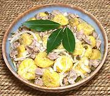

|
Chicken Gizzards w/ Green 'NanasPuerto Rico - Escabeche de guineos y mollejas | ||||
| Makes: Effort: Sched: DoAhead: |
3 # *** 50 min Must |
This salad (or appetizer) is very popular in Puerto Rico and among Puerto Ricans in North America. It deserves to be better known among non-Puerto Ricans. Of course, it's variously made. | |||
|
|
1-1/2 2 ------ 10 1/3 4 1/2 1-1/4 1/2 1/2 ------ |
# # --- oz c c c t t --- |
Chicken Gizzards (1) Thai Banana, Green (2) -- Marinade Onions Capers Bay Leaves Cider Vinegar Olive Oil ExtV Pepper Salt ------------- |
MAKE - (50 minutes (30 min work))
|